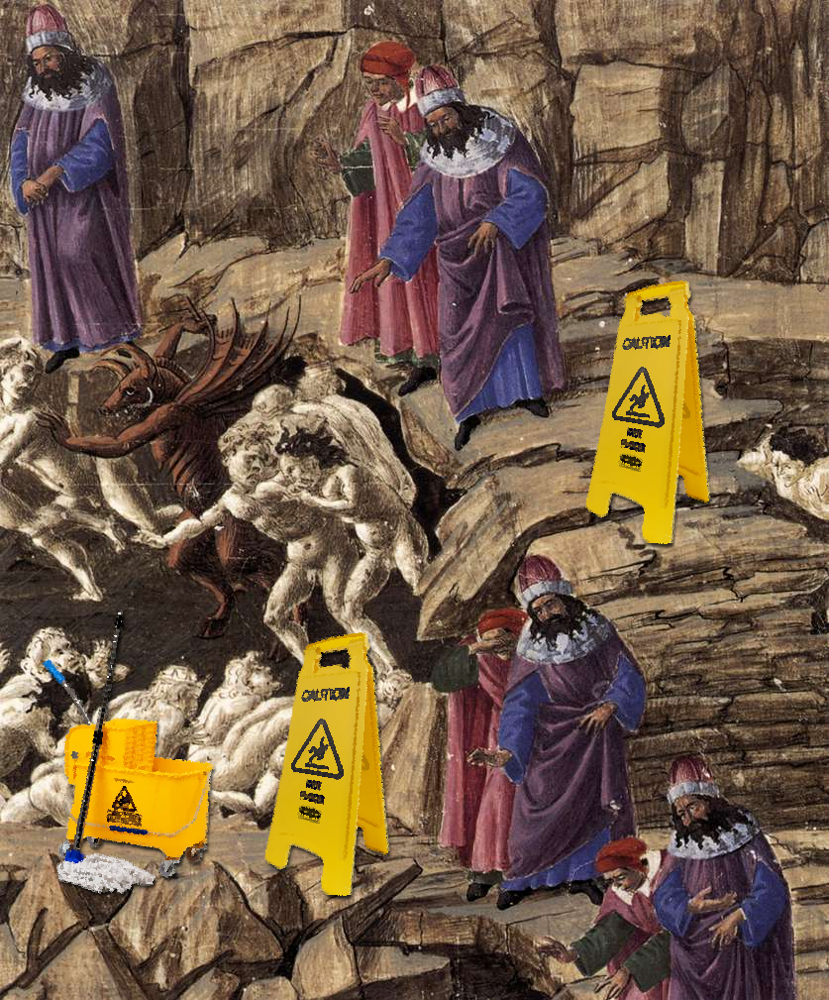

The Applied Research Sinner Circle
What laundry machines helped me realize about doing research
Essays
Reflections
Peter Licari ![]()

Let He Who is Without Blemish Cast the First Suds
The title and of this post probably makes it seem like I’m about to either embark on an poetic epic into the torturous depths of Hell or torture the hell out of a poetic epic for the sake of a post.1 However, in this context “Sinner” has nothing to do with divine judgement, comedic or otherwise. “Sinner” is the name of a man—and I came across his circle while learning why modern dishwashers suck.2
YouTube, preying on my ADHD, recently offered me a video on why modern dishwashers take so much longer than older models. If you’ve got some years on you (and, since you’re reading this post rather than asking for TikTok to make a custom AI video about it, I’m going to assume that you’re old enough), you may remember dishwashers taking about 60-90 minutes to do their thing from start to end. Nowadays, however, it’s not uncommon for it to take 90 minutes to two hours for a complete cycle to run. I suggest you watch the video for yourself for the full details on why but, long story short, it’s because consumers wanted dishwashers to be more energy efficient. But when it comes to cleaning things, striving for greater efficiency invariably introduces a trade-off.
Most of us have probably heard of some derivative of the “triple constraint” or “iron triangle”. It goes like this: a project’s quality is determined upon its scope, time investment, and cost. But those things are all in tension with each other. Originally created in the 1950s, the articulation I’m most familiar with is the phrase “good, fast, cheap. choose two.” In that same decade,3 German chemist Herbert Sinner created a framework that encapsulates the trade-offs inherent to tring to clean things. Except he identified 4 elements that go into getting something clean: time, temperature, chemistry, and mechanics. And instead of picking some subset, he insisted that there was no way—for all practical purposes—to alter one element without touching one of the others. If you want to take less time on cleaning something, you’ll probably need to increase the power of the chemicals involved, raise the heat, and/or put some more elbow grease into it. Want to use chemicals that are less harsh? Well, that’ll take more time, perhaps effort too. Less effort? More time, heat, and stronger detergents.

Sinner articulated this by embedding each element as a quadrant within a circle of fixed area. The balance isn’t to suggest that you need equal amounts of these four forces to clean things. (How would we even try to harmonize measures of heat, causticity, effort, and time?) Rather, the quadrants are meant to reflect the ideal proportions of the elements for whatever task is at hand. Washing your car after driving on wet clay roads is a different job than the weekly laundry. Deviating one force from that ideal balance will invariably either encroach on the space of the others or surrender space that is automatically claimed by them. More recent researchers have also suggested incorporating water as well, bringing the total number of slices to five.4 Whether you want to stick with the original or go with the revision, the concept is the same: Any particular cleaning job demands an optimum balance of a set number of considerations. You can’t improve upon one of them without somehow leaning on one of the others to fill the gaps.
The second I heard it, I immediately felt that something similar could be done for applied research. After all, I reasoned, we don’t call it cleaning the data for nothing! And once I applauded myself for my most excellent dad joke5, I found myself fixated on figuring out what the Research Sinner Circle would look like. And after a few hours of puzzling and pondering, I think I have a good enough crack at it to share.6
Without further ado:
The Applied Research Sinner Circle
There are 4 categories in the applied research Sinner circle:
- Time: The duration it takes to complete a task, project, or output.
- Resources: What you apply to the task, project, or output—broadly defined. This can include money, compute, people, data, etc. Basically, anything that you, the researcher, use to actualize the project.
- Misalignment: How much the research deviates from the “ideal” scenario. This can be subdivided into a few different kinds of deviations.
- Factual deviations: Something that deviates from the accumulated data: Misreporting a finding, commas and periods being in the wrong place, columns and charts being mislabelled, etc.
- Implementation errors: Something erroneous happening in the process of distilling or discovering facts: A bug in the code, an error in the transcript, etc.
- Deviations from Maximum Utility: When there is a gap between what was learned/delivered and what was actually desired by the people wanting the research done.7 And we all know there’s a million ways that can happen. You’re asked to measure net revenue but all you have are sales sans costs. You want to measure poverty but all you have is gross income. You present regression tables to a stakeholder who has recurring nightmares of “stats for XZY majors”. You prove beyond the shadow of a doubt that X causes Y but the stakeholder wants to know if it’s worth doing Z to X in the hopes that Y improves.
- Deviations from Best Practice: Something that isn’t “wrong” in the implementation per se, but makes it difficult to replicate, review, or rediscover what was done; typically in such a way that makes it harder to extend or generalize later: A lack of documentation, categorization without preserving your decision logic, coding without regard for technical debt, using a linear probability model rather than a logit or probit, etc.
- Expertise: The amount of relevant skill and knowledge the researcher can readily call upon in order to address the research task.
Let’s go through these individually and see how changing them will necessarily require a change in the others in order to compensate.
Time
It takes time to do things. I know, it bums me out too—but it seems like that’s an element of our fundamental reality. But it often is possible for a task to take less time—at least, up to a point. But as those of us who have looked back on work produced under a tight deadline will attest, doing things quickly means that you’re going to produce more errors. Small details can carry large amounts of leverage in the analysis. (Think about how much a simple - can change the narrative). Experts can go more quickly than non-experts but they’ll also face issues when faced with a time constraint. You may need additional resources if the demands are too compressed given your current capabilities. You may need to hire out help, buy a faster machine, subcontract some of the translations, etc.
If you go slower, though, you can probably get away with doing it yourself. You can spend time to gain any expertise that you’re lacking. You can double check with stakeholders that you’re answering the question they need you to—and triple check all of your commas. You can build an immaculate README to get future users up to speed quickly.
Resources
Even more annoying than the fact that things take time to do is that everything costs money. We haven’t quite hit a post-scarcity society where you can magically 3D print any material object you need to complete your research.
If you spend more on resources, you can shell out for a cloud instance that will run that Bayesian model faster than your chromebook could. You can hire proof-readers and fact checkers; you can run research projects to create original data rather than performing secondary analysis on data you’ll just have to make do with. You can invest in platforms and packages that will let you do the best possible work.
If you spend less…well, none of that stuff is possible. You’re stuck with the server that helped build the pyramids.8 The talent you can afford only knows how to do a for loop if Grok shows it to them in a bikini. You tried to run a Bayesian model once and your laptop burned your lap in protest. In a society still constrained by scarcity, you need things to get things done.
Misalignment
Unlike time and resources, maximizing misalignment is actually pretty easy. You can do things awfully quick if you just make up your numbers.9 Who needs focus groups when you can just go to r/NoStupidQuestions? Yes you have multiply nested data but, c’mon, how much different can just doing a standard ol’ regression be? And you don’t have to be much of an expert to write bad code. It’s easy—I do it all the time!
Of course, we’re not interested in maximizing misalignment. (Though I’m now thinking of a pretty fun party game for PhD students). We want as little misalignment as possible. That, of course, can be challenging. You’ll need more of the other things in order to successfully minimize it. You need expertise to not only identify where your current solution falls short but what you can do to improve upon it. More time gives you more opportunity to align with stakeholders and to put your spaghetti code into helper functions. As mentioned above, resources means that you can conduct the research necessary to answer the question at the heart of your inquiry. Doing so can shrink the gap between what’s ideal and what was actually created.
One thing I want to emphasize here is that “misalignment” is not necessarily a dirty word!10 You can’t have perfection in anything you do, applied research included. Even the best machines in the world conduct their operation within certain tolerances. Though we all ought to strive for our best, we have to remember that the output of most of our research is some kind of model. Sometimes it’s conceptual, sometimes it’s statistical: regardless, it is always a simplification of reality. Take the famous map that’s 1:1 with reality. In never ceding any misalignment, it loses its utility. Research is not the complete elimination of misalignment but the deliberate application of it to hone our understanding of some slice of reality.
Expertise
I’ll be honest, I went back and forth on including expertise. Not because I felt that it wasn’t important but because, of the four, it’s the only one where there appears to be a curvilinear effect. Yes, not being an expert means you’ll need to compensate in some way, whether through hiring additional help, getting resources that make it more tractable, accepting some deviation from the ideal case in favor of what you can actually, practically do, etc. But what about the risk of having too much expertise that you overengineer solutions? Or you take too much time because you’re trying out a bleeding-edge technique from the scientific literature? It seems like expertise may not have a clear-cut relationship.
There’s a pretty longstanding meme (in the sense of memetics; not cat photos and lossy gen-z absurdism) of “experts” who overcomplicate things to death. Those folks exist—and many of the rest of us slip into that mode from time-to-time. But I would argue that folks perpetually in that state aren’t necessarily “experts” at applied research. Applied research is, to me, a pragmatic art. You actually have to make things happen. By analogy, the difference is like that between people who know how an internal combustion engine works and someone who can fix your car. The Venn diagram overlaps for sure, but that overlap isn’t the whole circle. It’s the same principle of how being a historian versus a public historian, or a scientist versus a science communicator. They’re different things. It’s an incredibly rare person who is equally skilled at both. Plenty of excellent theoretical or academic researchers need to pick up different tools and mindsets to work in overtly applied settings.
So expertise is not about raw intelligence. It’s about knowing the balance between theory and practicality given the situation at hand. For example, I recently had a client with a regression problem that could have best been handled with a very specific Bayesian model. The rub is that, even on my machine with the kind of GPU that is (somehow) currently an appreciating asset, it’d still take about 40 hours to run. But the less perfect—but still plenty rigorous—solution could be done in about 7. Identifying the 40 hour model as an option took a certain amount of expertise. Identifying the 7 hour alternative and recognizing that the way it deviated from “ideal” didn’t compromise it’s utility took even more expertise. (And one of my favorite parts of this whole gig is that you can do it in such a way that you never stop learning. From this experience, I now know the cost of models of this approximate complexity—so, next time, I won’t have to sit for 4 hours watching brms chug along like an asthmatic coal train before calling it quits).
Critically, you will never hit the optimum value on any of these factors. Unless you’re doing something truly trivial, there will always be time spent, costs incurred, misalignment induced, and expertise required. It’s a necessary consequence of doing things in the real world.11
Take misalignment, for example. The moment you choose to measure something, you immediately make a decision about what stuff is worth counting and what stuff needs to be ignored. But it’s often quite difficult to measure things that are multidimensional. Take my example of poverty from earlier. Yes, being poor is related to one’s financial state. But it’s also related to housing and food security, access to healthcare, social embededness, access to clean water, sanitation, and electricity. But how should we measure all of those individual components? And how much should we combine those things into the concept of “poverty” that adequately translates across time and space?
It’s not just that “poverty” is a particularly thorny question—just about anything we ask questions about is multifaceted and multidimensional. And the criteria by which we judge things are often equally tricky to pin down. What’s “fair”? What’s “most enjoyable to the customer”? What’s “best for the future of the business”? What does it mean to be “healthy” or “happy” or “satisfied with your care”? And even if you manage to get to an acceptable answer for those aspects, it doesn’t mean that your implementation of the research will be perfect. You could do a laboratory study with protocols followed to the ‘t’ without realizing that your mice exhibited different behaviors in front of male researchers compared to female researchers.
We strive asymptotically for perfection: we can always improve, but we can have until forever and still not reach where our ideal point is.12
A research project is very much like a work of art: never really finished, only abandoned. Making research real requires choices. Choices require trade-offs. The purpose of the Applied Research Sinner cirlce is to give us (and our stakeholders) a tool to help understand what the consequence of those trade-offs are.
I hope you find it useful. 🖤
Footnotes
And in the ninth circle, furthest from the light of God’s love, everyone is forced to use SASS.↩︎
You know, as one does in their limited spare time.↩︎
Thinking of constraints must have been fashionable at the time. I guess this was around the intellectual heighday of Cybernetics, so that kind of tracks. That vibe was in the air.↩︎
For what it’s worth, as someone who has just heard of Sinner’s circle but with many, many hours cleaning after a creative child: the inclusion of water makes sense to me. Detergents can be more/less effective in different amounts of water. And water can act as a solvent on its own, its efficacy changing based upon how hot it is, how much time you let it soak, and how much agitation introduced. Well, mechanical agitation. There’s often plenty of the other kind when said creativity are on surfaces that they really shouldn’t be on, fuck that’s going to be expensive.↩︎
Someone has to! The rest of my house just groans.↩︎
And, yes, you read that right: a few hours of puzzling. Meaning that this video wound up preying on my ADHD twice! But time enjoyed is not truly wasted. I love stretching out the “theory” muscles a bit. Plus, I figured it would be a good way for me to get my feet wet making some interactive JS visualizations on the blog: how better to illustrate the point than an interactive illustrating the inherent trade-offs at play?↩︎
This can, and often does, include yourself.↩︎
Yeah, turns out, we were the ancient aliens all along. cue shitty sci fi music.↩︎
We know this and yet people still want LLMs to provide them with synthetic data.↩︎
Pun partially intended—this all started with dishwashers, remember?↩︎
Here, I guess, someone could quibble that you could do certain types of deductive philosophy or mathematics without any “misalignment”. So long, at least that it’s packed in an ironclad proof, it’s exactly the thing you set out to study, and you’ve done so adhering to all known best practices for the domain. Which, I guess? But I will remind you that this is the applied research sinner circle. Those folks scoffed at the title and returned to their hyperplatonic metakernels or whatever. Plus, I seriously wonder how much non-trivial research of that variety remains to be tackled too.↩︎
Yeah yeah math nerds, I know that some functions technically cross the horizontal asymptote. Let me have my poetic license, thanks.↩︎
Reuse
Citation
BibTeX citation:
@online{licari2026,
author = {Licari, Peter},
title = {The {Applied} {Research} {Sinner} {Circle}},
date = {2026-02-24},
url = {https://www.peterlicari.com/posts/sinner-2026/},
langid = {en}
}
For attribution, please cite this work as:
Licari, Peter. 2026. “The Applied Research Sinner Circle.”
February 24, 2026. https://www.peterlicari.com/posts/sinner-2026/.